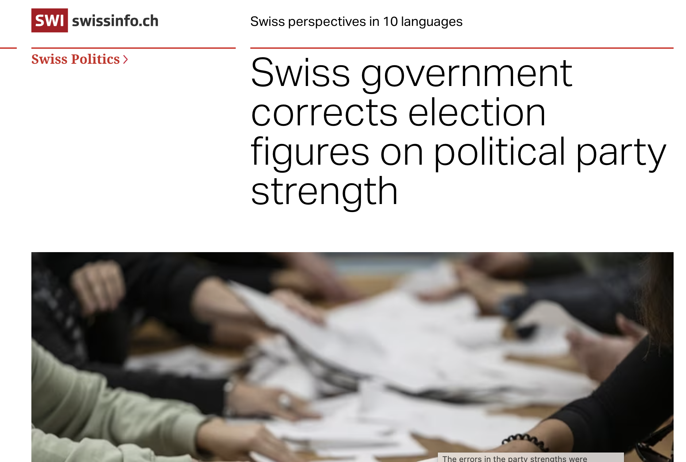
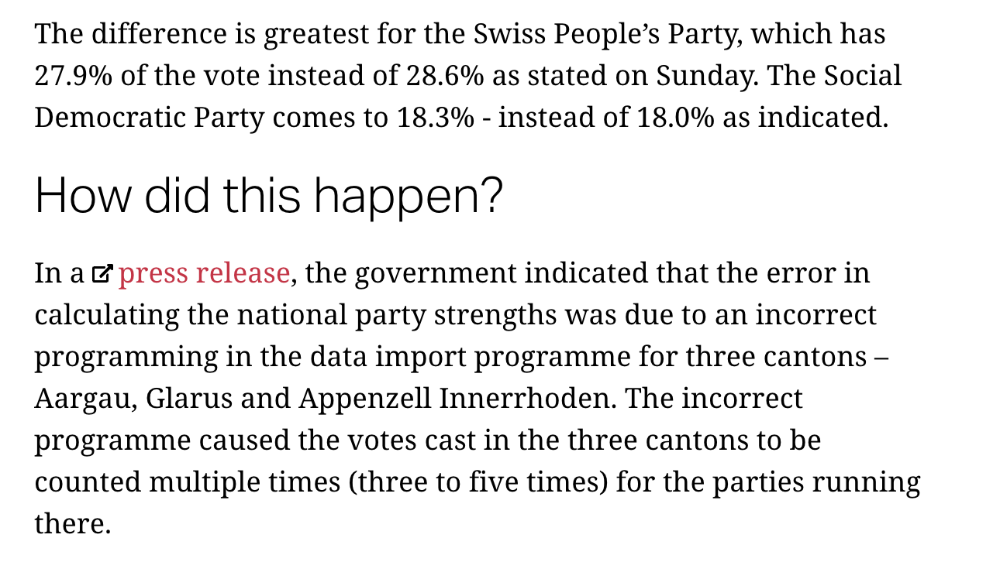
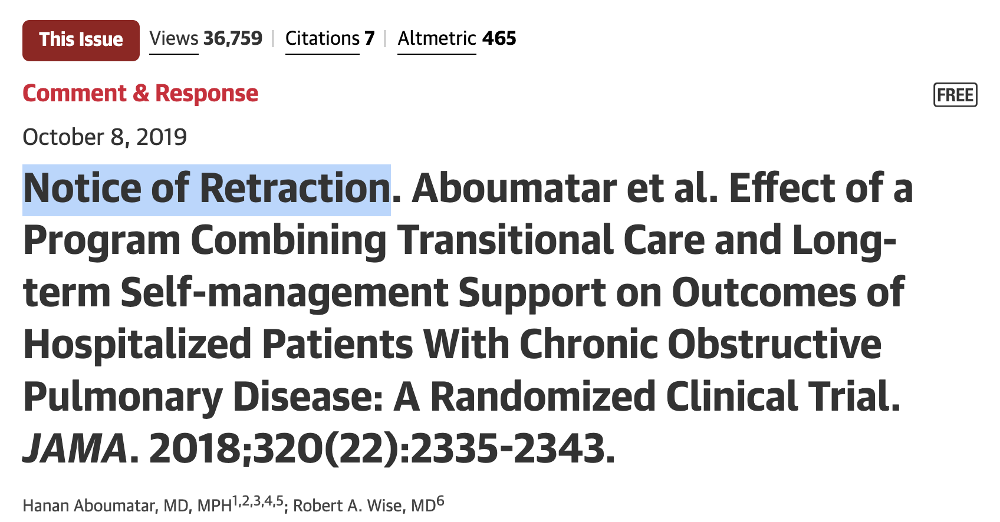

Why We Need to Improve Software Engineering in Biostatistics
A Call to Action
Keynote at SnB 2025
October 9, 2025
Preamble
Acknowledgements
Partly based on the manuscript “The Statistical Software Revolution in Pharmaceutical Development: Challenges and Opportunities in Open Source” (arXiv) which is joint work with:
- Heidi Seibold
- Anne-Laure Boulesteix
- Juliane Manitz
- Alessandro Gasparini
- Burak K. Günhan
- Oliver Boix
- Armin Schüler
- Sven Fillinger
- Sven Nahnsen
- Anna E. Jacob
- Thomas Jaki
It started from a panel discussion on “Research Software Engineering for Clinical Biostatistics” at ISCB 43 in Newcastle in August 2022.
Objective of this keynote
- I would like to kick off a good discussion (hopefully also beyond this talk) so that we can learn from each other
- I would like you to reflect on how biostatistics is being carried out on a daily basis in your organizations
- Why biostatistics? Because we are at the Statistics & Biopharmacy conference, and also that is what I know about most about
- I would like you to strive to get yourself savvy in good software engineering practices and apply them in your daily job
- I would like you to influence your biostatistics colleagues and departments in our organizations
What can happen due to bad coding?
What can happen due to bad coding? (cont’d)
Another example, now from biostatistics
Another example, now from biostatistics (cont’d)

Another example, now from biostatistics (cont’d)
Where I am coming from with this topic
My path to biostatistics in Pharma
- I was good in math and I really liked stochastics
(“What is the chance of winning the lottery?”) - But I always had fun programming
(Remember those days of Basic and Turbo Pascal?) - I was also interested in medicine …
… but I could faint when watching somebody draw blood from my arm - So I chose statistics because I could combine math and programming, and work with medical data!
- I was formally trained as a statistician (B.Sc., M.Sc., Ph.D.)
- I started working in the Pharma industry as a biostatistician
What I did not do during those first years
- I did not store my programs in version control systems
- I did not worry too much about making my code readable by others
- I did not try to make calculations reproducible
- I did not get any code review of my study design simulations
- I did not write any unit tests for my packages
Some tricks I learned in Tech
- After about 5 years I had the opportunity to switch gears and work at Google
- I learned a lot quickly about:
- how to write unit tests
- how to use a consistent code style
- how to write design documents
- how to name functions
- how to review code and respond to review feedback
- how to check in code into the (internal) repository
- Also, but not that important:
- how to write SQL queries, macros, unit tests for those
- got to know memes and how to create new ones
But Pharma is more fun for me
- I really liked that I did a lot of programming in a structured way in Google
- But I missed the scientific aspects from Pharma …
… where we deal not just with numbers, but also biology, medicine, patients, medical doctors, etc. - And Roche just started venturing more into R territory, so I built up the Statistical Engineering team there
- And then last year I co-founded RCONIS to
- help Pharma companies to use (new) statistical methodology in R reliably
- be able to work remotely from Taiwan
Programming is ubiquitous, but (still) neglected
Note
- I am trying to zoom in here on the “pain points”
- This is based on anecdotal stories from different organizations
- This is not based on surveys or quantitative evidence collected in a structured way
- In the discussion (here and later) we can learn more from each other
- If your experience is similar, feel free to share the pain points
- If your experience is different, then that is great and I would love to learn about it
(Almost) All biostatisticians code
- We don’t use calculators anymore, right?
- There are a lot of graphical tools that we can use for simple tasks …
… but it won’t be sufficient for most biostatistics use cases - We learn programming, maybe already in high school, or latest in undergraduate courses
- We wrangle, analyze, visualize, predict, … biomedical data with code every day
But many don’t take it serious enough
- Most of the coding we do alone without any discussion or review
- We often copy and paste code from each other and adapt it every time
- We often distinguish ourselves from “Statistical Programmers” and give them instructions
(and feel we are better than them) - We often shy away from sharing our code because we think it is too ugly
- We often don’t take enough time to write clean code because we are too busy
- We often just develop code locally on our laptops
- We rarely use version control systems
Why is this a problem?
Cannot handover to other statisticians
- Statisticians (too) take vacations, go on longer leave, switch companies, etc.
- Then another statistician (peers, managers) needs to back up or take over the project
- They might need to revisit the design or analyses and thus need to modify the code
- Might not find the code at all (because not in a version controlled repository)
- Might not be able to understand the code (because unreadable by others)
Cannot maintain code
- Not just switching between different statisticians, but also over time, things can become difficult
- When I read code from one, two years ago, it is almost code from another person
- If I look back at my quickly written, ugly code, which is not documented, I have a very hard time
- If you change to the copy and paste code, it won’t help anybody else
- If you discover bugs, those cannot be fixed across projects in one go
- If you add functionality, it will not be inherited by the other projects
Cannot prevent bugs
- If we change the code and don’t have tests, we don’t know if it still works correctly
- Typically we just run then the whole script again and if it does not fail with an error we think it is fine
- But it might still produce wrong results due to new bugs
- And if we fix a bug, and don’t add a test for it at the same time, it might come back later
- This is even more important in software packages that we create for us and others
Cannot reproduce results
- When we don’t prepare for it, new versions of R or R packages can lead to different results
⇨ This can be a real problem e.g. during inspections - Very hard to reproduce manual steps:
- e.g. moving data around, running scripts, creating documents, etc.
- would need to be thoroughly documented to have a small chance, but that is usually omitted
- But Statistics is a key component of the scientific value chain …
… thus has a responsibility to ensure reproducibility
Cannot submit to external stakeholders
- If we cannot share reliably internally in the company, then less so with external stakeholders
- So far, analyses that need to be shared with regulators are often rewritten by statistical programmers
- Duplicates the work with original coding and has additional risk of introducing bugs
- But is usually not done for study protocol contents (sample size, simulations)
- Often reporting code was translated to proprietary software because that was considered the only “validated” way
- Still can have bugs in any software and the actual analysis scripts and macros
What can we do about it?
Become aware of the issues
- Most statisticians actually have examples where lax programming led to such problems
- Let’s realize that a lot is at stake:
we are not building airplanes that could fall from the sky …
… but we are impacting the life of patients! - It matters for patients that we
- calculate the right sample size,
- more generally determine the right clinical trial design,
- help finding the right molecules based on preclinical experiments,
- etc.
Become aware of the issues (cont’d)
Significance, 18 (3): 6-7. https://doi.org/10.1111/1740-9713.01522
Take software engineering seriously
- We know what we should do, let’s just take the time and energy to do it
- We can learn a lot from the statistical programmers:
- organize ourselves with standards (starts with naming conventions for files and folders)
- automate repetitive tasks (LLMs can help us to write tools for this)
- consider double programming of key results
- Processes should consider code in the same priority as documents (statistical analysis plans etc.)
- that implies code review, good and consistent code style, business continuity, …
- Strive to be on par with Tech companies with regards to coding quality
Take software engineering seriously (cont’d)

Significance, 18 (4): 42-44. https://doi.org/10.1111/1740-9713.01554
Educate, educate, educate
- Starts with secondary schools:
- computer science should become a standard subject, not just be an extra
- same importance as math, geography, physics, etc.
- Continues with undergraduate and graduate programs:
- computer science must become a key component of statistics and data science programs
- good software engineering practices warrant dedicated courses
- Continues with post-graduate education during the work life:
online courses, software engineering workshops, conference sessions, etc. - Do not think that programming is superfluous because of LLMs! You still need to be able to do it yourself to use LLMs efficiently and reliably!
Establish dedicated teams
- Research Software Engineering teams are now established in academia, including data science institutions
- Similarly pharma companies are establishing software engineering focused teams
- Direct focus is often development of reusable software
- We should not stop there but also strive to improve the day to day work:
biostatistics, medical writing, preclinical experiments, etc. - Software engineering work is complex, so we need top talents for this
Provide attractive career paths
- Need to be able to attract and retain top talents
- Defining the job role can have different perspectives
- We can think about an evolution of “statistical programmers”
- Or a convergence of “statisticians” and “statistical programmers”
- Or a new definition of “statistical software engineers”
- Important is to make these careers attractive:
- same compensation as for biostatisticians or methodology experts
- same respect in the hierarchy of disciplines
- same career levels possible including leadership roles
Collaborate across companies
- More natural now that we use R and other open source software
- Has been made so much easier in the last decade
(e.g. video conferencing, cloud based documents, code sharing platforms) - Stakeholders ask for companies to work together towards standards,
rather than receiving different solutions from each company - Loosely coupled software modules allow to “plug and play”
- combining different modules to make them fit company standards
- conneting to internals via company specific extensions
- Key opportunity in contrast to previous proprietary software based, company siloed, stack
Just A Few Examples
R Package crmPack
crmstands for continual reassessment method (Bayesian design for dose escalation)- We started in 2013 with custom R scripts running
JAGScode to run Markov Chain Monte Carlo (MCMC) - Realized in 2014 that we need to have a way to avoid copy and paste of these via an R package
- Published on CRAN in 2015
- Described in a paper in 2019, and other companies started to use it
- Joined forces about end of 2021 to develop the package further together
- Started crowd-funding the development via RPACT in 2025
Working group openstatsware
- Has been founded in August 2022 as working group in the ASA Biopharmaceutical Section
- More than 60 members from over 30 pharma companies, CRO, etc.
- open for new members
- Focuses on
Tools for reproducible research
Many great tools exist to help with reproducibility of statistical analyses (see CRAN task view), e.g.:
Sweave(2002)knitrandRmarkdown(2014)packrat(2014)officer(2017)usethis(2017)renv(2019)targets(2020)quarto(2021)
Tools for package developers
Similarly lots of tools have been provided for package developers:
testthat(2009)devtools(2011)checkmate(2014)lintr(2014)spelling(2017)styler(2017)pkgdown(2018)precommit(2020)
Templates to start from use cases
Templates can be a great start to centralize code for reoccurring use cases, e.g.:
- TLG Catalog
- Biomarker Analysis Catalog
- RPACT Vignettes (Clinical trial design)
- Mediana case studies (Simulations of trials)
- Falcon (FDA Safety Tables and Figures)
Guidelines for good practices
rOpenSci- Non-profit initiative founded in 2011
- Staff, process, guidelines for Statistical Software Peer Review of R packages
- The Turing Way
- Started in 2019 as a guide for reproducibility (covering Version Control, Code Testing, and Continuous integration)
- Now encompasses guides for Reproducible Research, Project Design, Communication, Collaboration, Ethical Research
openstatsguidewith “Minimum Viable Good Practices for High Quality Statistical Software Packages”- Concise check list for building R, Python, Julia packages
Guidelines for good practices (cont’d)
- “Best practices in statistical computing” (Sanchez et al., 2021)
- 5 steps for implementing a code quality assurance (QA) process
- adherence to clean and consistent code style
- clear written documentation (code, workflow, decisions)
- careful version control
- good data management
- regular testing and review
- 5 steps for implementing a code quality assurance (QA) process
Workshops teaching good practices
- “Good Software Engineering Practices for R Packages”
openstatswarehave run 12 workshops across the globe since 2023!- Including the short course here tomorrow afternoon - see you there!
- “The Carpentries”
- Teaches foundational coding and data science skills to researchers worldwide
- Teaching material on software, data, and library is available
- “Making Data Science Work for Clinical Reporting”
- Coursera course on how principles and methods from data science can be applied in clinical reporting
Call to action
Call to action
- Let’s be honest about how we are doing biostatistics in our companies
- Let’s realize that a lot depends on doing the software engineering well
- Let’s get savvy with the tools and good practices ourselves to improve our habits
- Let’s influence our colleagues and managers in our companies to improve structures and processes
- Let’s realize the benefits from improved software engineering in biostatistics!
Thank you!
These slides are at RCONIS.github.io/snb-2025
Looking forward to connecting with you: linkedin.com/in/danielsabanesbove


Why We Need to Improve Software Engineering in Biostatistics | License